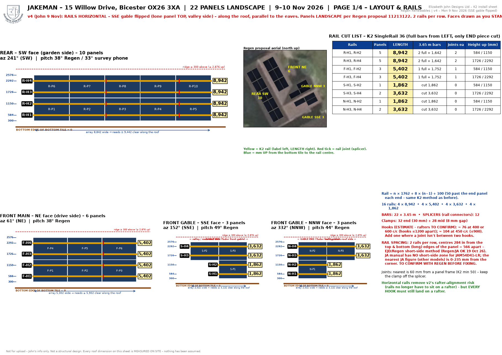
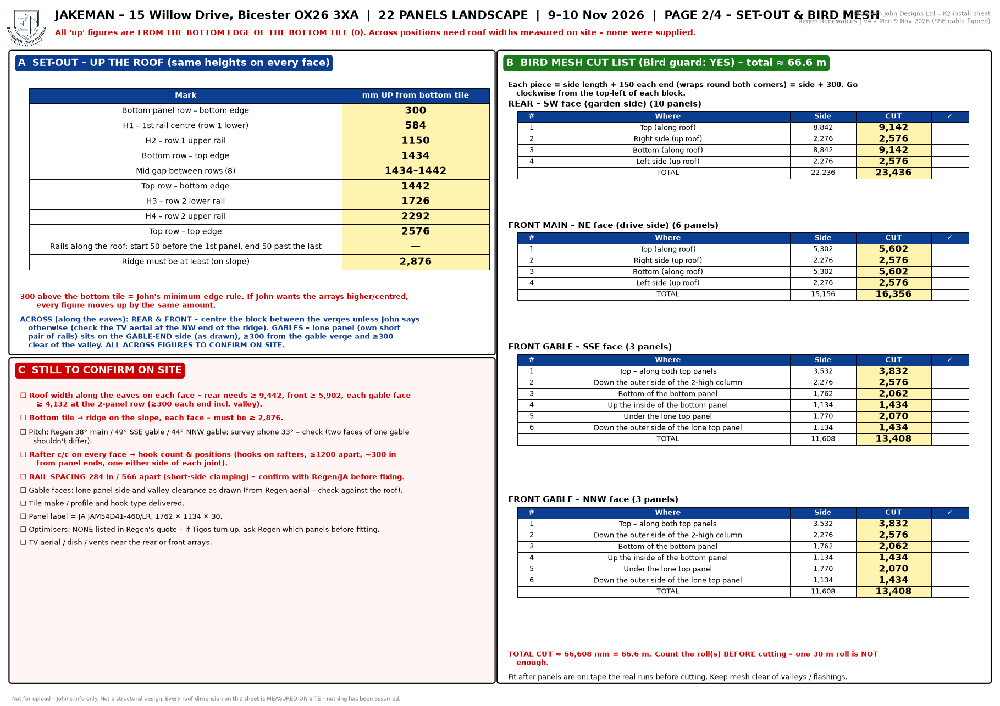
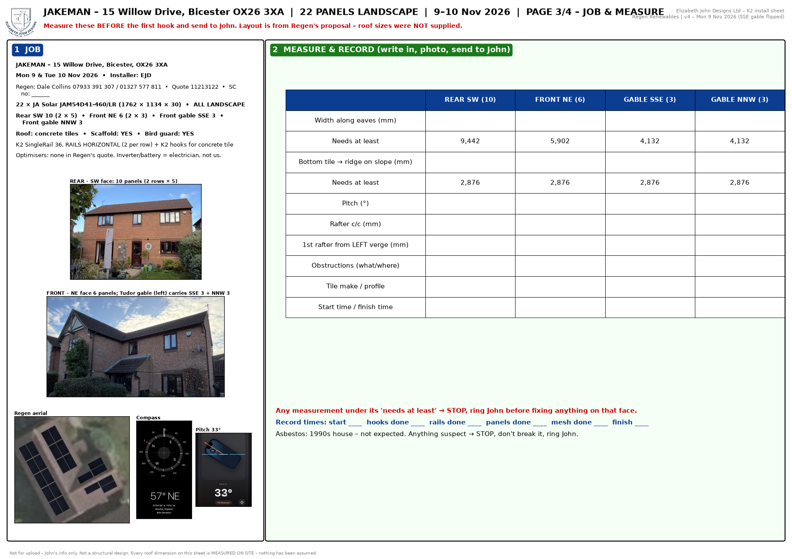
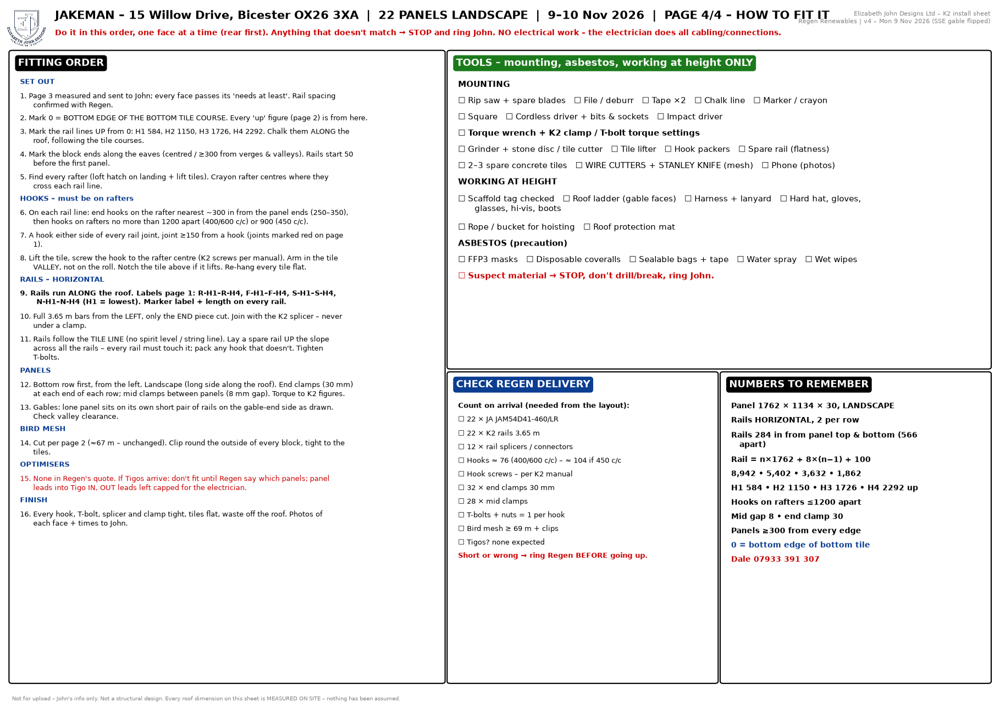

Jakeman – 15 Willow Drive, Bicester OX26 3XA · Mon 9 – Tue 10 Nov 2026 · v4 (SSE gable flipped)
22 JA 460 W panels LANDSCAPE on 4 faces – rear SW 10, front NE 6, gable SSE 3, gable NNW 3. K2 rails HORIZONTAL, 2 per row.
Rails: rear R-H1–H4 4 × 8,942 · front F-H1–H4 4 × 5,402 · SSE S-H1,H2 2 × 1,862 + S-H3,H4 2 × 3,632 · NNW N-H1,H2 2 × 1,862 + N-H3,H4 2 × 3,632. 22 bars × 3.65 m, 12 splicers, 32 end + 28 mid clamps.
Set-out up from the bottom tile (0): panel bottom 300 · H1 584 · H2 1,150 · H3 1,726 · H4 2,292 · panel top 2,576 · ridge ≥ 2,876.
Hooks: ≈76 on 400/600 rafters, ≈104 on 450. Bird mesh ≈ 66.6 m (one 30 m roll NOT enough). No optimisers.
SSE gable (v4): lone panel TOP on the valley / main-roof side; top rails 3,632 (2 panels); short rails 1,862 under the single bottom panel on the gable end.
TO CONFIRM before fixing: 284 mm rail spacing (ring Regen) · rafter spacing · roof widths (rear 9,442 / front 5,902 / gables 4,132 min) · pitch 38/49/44° v 33° on survey · 300 mm bottom gap · tile / hook type · TV aerial · valley clearance. Anything under → STOP, ring John.
← Back to the app Full sheet (PDF)



